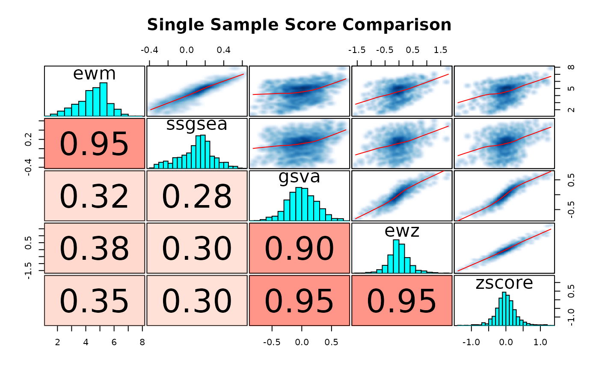
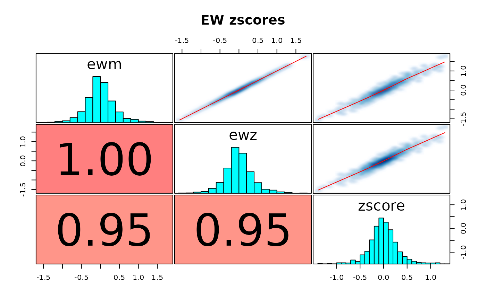

R/scoreSingleSamples.R
scoreSingleSamples.RdIt is common to assess the activity of a gene set in a given sample. There
are many ways to do that, and this method is analogous to the
seas() function in that it enables the user to run a multitude of
single-sample-gene-set-scoring algorithms over a target expression matrix
using a GeneSetDb() object.
scoreSingleSamples(
gdb,
y,
methods = "ewm",
as.matrix = FALSE,
drop.sd = 1e-04,
drop.unconformed = FALSE,
verbose = FALSE,
recenter = FALSE,
rescale = FALSE,
...,
as.dt = FALSE
)A GeneSetDb
An expression matrix to score genesets against
A character vector that enumerates the scoring methods you want to run over the samples. Please reference the "Single Sample Scoring Methods" section for more information.
Return results as a list of matrices instead of a melted
data.frame? Defaults to FALSE.
Genes with a standard deviation across columns in y
that is less than this value will be dropped.
When TRUE, genes in y that are not found in
gdb are removed from the expression container. You may want to set this
to TRUE when y is very large until better sparse matrix support is
injected. This will change the scores for gsva and ssGSEA, though.
Default is FALSE.
make some noise? Defaults to FALSE.
If TRUE, the scores computed by each method
are centered and scaled using the scale function. These variables
correspond to the center and scale parameters in the
scale function. Defaults to FALSE.
these parameters are passed down into the the individual single sample scoring funcitons to customize them further.
If FALSE (default), the data.frame like thing that
this funciton returns will be set to a data.frame. Set this to TRUE
to keep this object as a data.table
A long data.frame with sample_id,method,score values per row. If
as.matrix=TRUE, a matrix with as many rows as geneSets(gdb)and as many columns as ncol(x)
Please refer to the "Generating Single Sample Gene Set Scores" of the sparrow vignette for further exposition.
The following methods are currenly provided.
"ewm": The eigenWeightedMean() calculates the fraction each gene
contributes to a pre-specified principal component. These contributions
act as weights over each gene, which are then used in a simple weighted
mean calculation over all the genes in the geneset per sample. This is
similar, in spirit, to the svd/gsdecon method (ie. method = "gsd"``) You can use this method to perform an "eigenweighted" zscore by setting unscaleanduncentertoFALSE. "ewz": with unscaleanduncenterset toFALSE`.
"gsd": This method was first introduced by Jason Hackney in
doi:10.1038/ng.3520. Please refer to
the gsdScore() function for more information.
"ssgsea": Using ssGSEA as implemented in the GSVA package.
"zscore": The features in the expression matrix are rowwise z transformed.
The gene set level score is then calculated by adding up the zscores for
the genes in the gene set, then dividing that number by either the the
size (or its sqaure root (default)) of the gene set.
"mean": Simply take the mean of the values from the expression matrix
that are in the gene set. Right or wrong, sometimes you just want the mean
without transforming the data.
"gsva": The gsva method of GSVA package.
"plage": Using "plage" as implemented in the GSVA package
gdb <- exampleGeneSetDb()
vm <- exampleExpressionSet()
scores <- scoreSingleSamples(
gdb, vm, methods = c("ewm", "gsva", "zscore"),
center = TRUE, scale = TRUE, ssgsea.norm = TRUE, as.dt = TRUE)
sw <- data.table::dcast(scores, name + sample_id ~ method, value.var='score')
# \donttest{
corplot(
sw[, c("ewm", "gsva", "zscore")],
title = "Single Sample Score Comparison")
#> Warning: argument 1 does not name a graphical parameter
#> Warning: argument 1 does not name a graphical parameter
#> Warning: argument 1 does not name a graphical parameter
#> Warning: argument 1 does not name a graphical parameter
#> Warning: argument 1 does not name a graphical parameter
#> Warning: argument 1 does not name a graphical parameter

# }
zs <- scoreSingleSamples(
gdb, vm, methods = c('ewm', 'ewz', 'zscore'), summary = "mean",
center = TRUE, scale = TRUE, uncenter = FALSE, unscale = FALSE,
as.dt = TRUE)
zw <- data.table::dcast(zs, name + sample_id ~ method, value.var='score')
# \donttest{
corplot(zw[, c("ewm", "ewz", "zscore")], title = "EW zscores")
#> Warning: argument 1 does not name a graphical parameter
#> Warning: argument 1 does not name a graphical parameter
#> Warning: argument 1 does not name a graphical parameter
#> Warning: argument 1 does not name a graphical parameter
#> Warning: argument 1 does not name a graphical parameter
#> Warning: argument 1 does not name a graphical parameter

# }